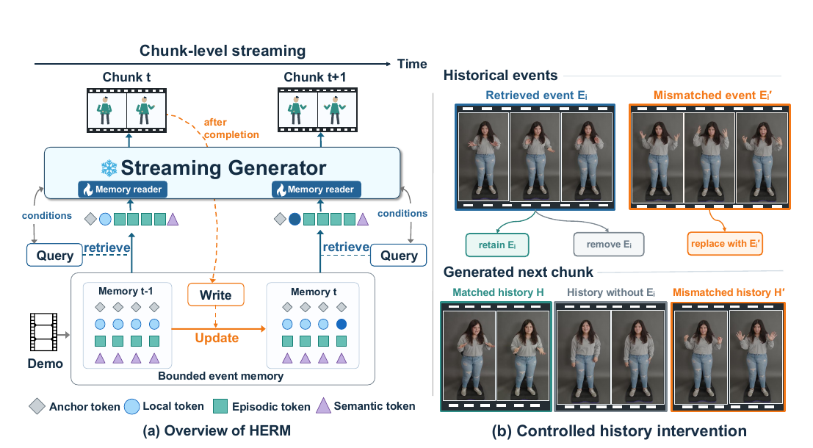

Recent chunks and event summaries retain interaction trajectories under a bounded storage budget.
Streaming interactive avatar generation
HERM
Hierarchical Event-Routed Memory for
Context-Conditioned Interactive Avatar Generation
01
Abstract
Interactive streaming avatar generation requires natural and continuous responses to a conversational partner. However, current chunk-wise generators rely mainly on current audio and may produce generic or repetitive motions with limited use of earlier interaction. Keeping all previous chunks is costly, while compression alone neither identifies which behaviors matter now nor ensures that retained history affects generation. We view a streaming conversation as a sequence of multimodal interaction events, in which an appropriate response depends on both the current partner signal and relevant past events. Based on this view, we propose Hierarchical Event-Routed Memory (HERM) for history-conditioned interactive avatar generation. HERM continuously organizes completed interaction events into a bounded memory and retrieves relevant trajectories according to the current audio, speaking/listening state, and recent motion. Experiments examine whether retrieved trajectories affect the next chunk and thereby improve contextual appropriateness, reduce repetitive behavior, and preserve the avatar's characteristic expressive behavior.
02
Method
Event memory that changes
the next response.
HERM stores completed interaction as structured events, reads it under the current condition, and controls which generated content becomes durable evidence.

Audio, speaking/listening states, and recent motion select the evidence used for the next animation chunk.
Reliability-aware admission keeps generated history useful instead of letting errors accumulate over time.
03
Comparison demos
One interaction context.
Multiple visual responses.
Each sequence pairs the interaction partner with model outputs. Scroll through the generated responses on the right under the same context.